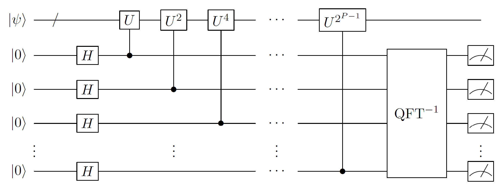

Quantum phase estimation
Rough overview (in words)
The quantum phase estimation (QPE) subroutine produces an estimate of an eigenvalue of a unitary operator. It is a cornerstone of quantum algorithms primitives and has numerous applications. For example, Shor's algorithm for factoring can be viewed as an application of QPE together with modular exponentiation. Similarly, when combined with Hamiltonian simulation, QPE can produce an estimate for an eigenvalue of a Hamiltonian (given an appropriate initial state), an important problem in areas such as quantum chemistry. In this context, QPE is the quantum analogue of measuring the value of a real function \(f\) of a random variable \(x\), where in the quantum case, the function \(f\) can include noncommuting terms, and the random variable \(x\) is a vector in a Hilbert space.
Rough overview (in math)
Let \(U\) be a unitary with eigendecomposition \(U=\sum_j e^{i2\pi\phi_j}|\psi_j\rangle \langle \psi_j|\). Given as input the state \(|\psi_j\rangle\), the QPE subroutine produces an estimate \(\smash{\hat{\phi}_j}\) for \(\phi_j\). The algorithm requires the ability to apply controlled-\(U^{2^p}\) for non-negative integers \(p\). If \(\phi_j\) is an exact multiple of \(2^{-P}\), then an exact estimate of \(\phi_j\) can be learned with certainty using only \(p\in \{0,1,\ldots,P-1\}\). In general, an estimate \(\smash{\hat{\phi}_j}\) of \(\phi_j\) satisfying \(\smash{|\phi_j-\hat{\phi}_j|\leq \epsilon}\) can be learned with high probability by taking the maximum value of \(2^p\) on the order of \(1/\epsilon\). The algorithm also requires application of an inverse quantum Fourier transform to orchestrate the constructive interference near the estimate for \(\phi_j\).
Phase estimation can also be applied coherently onto a superposition of eigenstates. Suppose that the input state is \(|\psi \rangle = \sum_j\alpha_j|\psi_j\rangle\). By linearity, if each phase \(\phi_j\) is a multiple of \(2^{-P}\) and phase estimation is run with sufficient resolution, then QPE enacts the following unitary
where \(\ket{\phi_j}\) holds a \(P\)-bit binary representation of \(\phi_j\). If the auxiliary register is measured, then with probability \(|\alpha_j|^2\) (consistent with the Born rule) the estimate \(\phi_j\) is obtained and the state collapses to the corresponding eigenstate \(|\psi_j\rangle\).1 If the phases \(\phi_j\) are not multiples of \(2^{-P}\), an approximate version of this operation can still be accomplished as long as the precision is sufficiently small to resolve the eigenvalues, subject to some caveats (discussed below).

Dominant resource cost (gates/qubits)
The QPE subroutine is typically dominated by calls to the controlled unitary \(U\). If resolution \(\epsilon\) is desired, one must perform controlled-\(U^{2^p}\) operations for \(p\in \{0,1,\ldots, \lceil \log_2(1/\epsilon) \rceil + \mathcal{O}\left( 1 \right)\}\); thus, the number of calls to a controlled-\(U\) oracle will be \(\mathcal{O}\left( 1/\epsilon \right)\). This dependence on \(\epsilon\) is optimal; the \(\mathcal{O}\left( 1/\epsilon \right)\) scaling is known as the Heisenberg limit.
In the context of estimating the eigenenergy of a Hamiltonian \(H\), one can choose \(U = e^{iH}\), and then implement controlled-\(U^t\), i.e., controlled-\(e^{iHt}\), with Hamiltonian simulation. In this case, given the ability to prepare an eigenstate of \(H\), an \(\epsilon\)-approximation of the eigenvalue requires values of \(t\) up to \(\mathcal{O}\left( 1/\epsilon \right)\).2 However, one must also factor in the error in the Hamiltonian simulation. In a typical setting, access to the \(n\)-qubit Hamiltonian is given through a linear combination of \(L\) unitaries. Let \(\lVert H \rVert_1\) denote the sum of the coefficients in the combination. Then, methods for Hamiltonian simulation based on quantum signal processing can approximate \(e^{iHt}\) to error \(\mathcal{O}\left( \epsilon \right)\) with \(\mathcal{O}\left( nL(\lVert H \rVert_1 t + \log(1/\epsilon)) \right)\) gate complexity, whereas methods based on product formulae incur cost \(\mathcal{O}\left( nL(\lVert H \rVert_1 t)^{1+1/2k}\epsilon^{-1/2k} \right)\) for \((2k)\)th-order product formulas, although the actual cost can be lower after accounting for structure in the Hamiltonian terms. Balancing the error from phase estimation against the error from Hamiltonian simulation can cause sub-Heisenberg-limited performance, such as in the case of the product formulae approach. The overhead associated with imperfect Hamiltonian simulation can be avoided by applying QPE to different functions of \(H\); for example, a promising choice is the qubitization operator, which acts in a similar way to \(U = e^{i \arccos(H)}\). The reason this is advantageous is that the qubitization operator can be implemented exactly given access to a block-encoding of \(H\) [1, 2, 3].
The number of qubits for QPE is simply the size of the register needed to hold the input state \(\ket{\psi_j}\) plus the size of the register needed to hold the estimate \(\hat{\phi}_j\) (that is, roughly \(\lceil \log_2(1/\epsilon) \rceil\) bits). Additionally, QPE requires an inverse quantum Fourier transform (QFT), which adds only \(\smash{\mathcal{O}(\log^2(1/\epsilon))}\) additional gates to the protocol.
Another version of QPE [4] achieves the same task with only a single ancilla qubit, but, as a result, learns only one bit of the output at a time. Additionally, it requires an exact eigenstate as input. The latter problem can be avoided using a statistical approach [5, 6].
Caveats
The main caveats of QPE are related to the fact that eigenphases are not always exact integer multiples of \(2^{-P}\), resulting in noncertain outcomes of QPE, which can lead to complications in certain applications.
- Fat tails and boosting of success probability: Whenever the phases \(\phi_j\) are not exact integer multiples of \(2^{-P}\) for some integer \(P\), phase estimation will not return the answer \(\phi_j\) with certainty. Rather, there will be a distribution of possible estimates \(\smash{\hat{\phi}_j}\) that is peaked near \(\phi_j\). If one chooses \(P = \lceil \log_2(1/\epsilon) \rceil + \mathcal{O}\left( 1 \right)\), then most of the probability mass of this distribution lies within \(\epsilon\) of \(\phi_j\). As \(P\) is increased further, the distribution becomes more sharply peaked near \(\phi_j\), and if an \(\epsilon\)-accurate estimate with \(1-\delta\) probability is desired, one must take \(P = \lceil \log_2(1/\epsilon) \rceil + \mathcal{O}\left( \log(1/\delta) \right)\), corresponding to a multiplicative \(\mathcal{O}\left( 1/\delta \right)\) overhead in the query complexity to \(U\) and \(\mathcal{O}\left( \log(1/\delta) \right)\) additional ancilla qubits. This poor \(\delta\) dependence is due to "fat tails" on the distribution of estimates of \(\hat{\phi_j}\). One way to avoid this overhead is to take the median of estimates obtained from \(\mathcal{O}\left( \log(1/\delta) \right)\) repetitions of QPE [7, Lemma 1]. A downside of this approach is that it may be difficult to implement coherently on a superposition of eigenstates, in the sense of Eq. \(\eqref{eq:coherent_QPE}\), since computing the median would require a coherent quantum sorting network. An alternative way to circumvent the fat tails problem is to modify the QPE protocol to have a nonuniform superposition in the register that controls applications of \(U\); a judicious choice of superposition leads the distribution over estimates \(\smash{\hat{\phi}_j}\) to be a Kaiser window distribution, which minimizes the probability of deviating from \(\phi_j\) by more than \(\epsilon\); boosting the success probability to \(1-\delta\) incurs multiplicative \(\mathcal{O}\left( \log(1/\delta) \right)\) cost, rather than \(\mathcal{O}\left( 1/\delta \right)\) [8, Appendix C]. See also [9], where a Gaussian profile is used to suppress the tails.
- Performing coherent QPE: When \(\phi_j\) are noninteger multiples of \(2^{-P}\), the coherent operation in Eq. \(\eqref{eq:coherent_QPE}\) cannot be straightforwardly performed with exact fidelity. This is because for each value of \(j\), the second register will be in a superposition of many values of \(\smash{\hat{\phi}_j}\) (most but not all of the amplitude will lie on estimates close to \(\phi_j\)). To restore coherence, one might try coherently rounding the estimate \(\smash{\hat{\phi}_j}\) onto a coarser net of grid points (and then uncomputing the original estimate \(\hat{\phi_j}\)); however, there will always be edge cases where \(\phi_j\) falls very near the midpoint between two grid points and rounding destroys some of the coherence in the input. This is true even as the precision of QPE is taken to zero (\(\epsilon \rightarrow 0\)). See [10] for a discussion. One possible way to mitigate this issue is presented in the "consistent phase estimation" protocol of [11, Section 5.2], where a random shift is applied to the grid points to avoid this situation for any particular eigenphase with high probability. However, this does not generically work simultaneously for all eigenphases. In [10], it is shown that performing Eq. \(\eqref{eq:coherent_QPE}\) is impossible without a "rounding promise" on the set of eigenphases \(\{\phi_j\}\).
- Biased estimator: a further consequence of the noncertainty of the QPE output is that the estimate \(\smash{\hat{\phi}_j}\) is biased; that is, its expectation value is not exactly equal to \(\phi_j\). This issue can also be fixed with a random shift idea, yielding an unbiased (and symmetrically distributed) version of QPE [12, 13].
Example use cases
- In quantum chemistry and condensed matter physics, QPE is used to measure the eigenvalues (and especially the ground state energy) of the Hamiltonian \(H\), which gives knowledge about reaction mechanisms, stable configurations, and other equilibrium properties. For QPE to succeed, a trial state \(|\psi\rangle\) with substantial overlap with the eigenstate of interest must be input to QPE, which is challenging in the general case.
- In Shor's algorithm, given a composite integer \(N\) and a (randomly chosen) base \(g < N\), QPE is used to determine the order of \(g\), that is, the minimum integer \(r\) for which \(g^r \equiv 1 \mod N\), which is in turn used to infer the prime factors of \(N\). Here, the unitary \(U\) is the modular multiplication unitary that sends \(\ket{x} \mapsto \ket{gx \mod N}\).
- In amplitude estimation, given a unitary \(U\) that prepares a state \(U\ket{\psi_0} = a\ket{\psi_g} + b\ket{\psi_b}\), QPE is used to estimate \(|a|\) or \(|a|^2\).
- In the Monte Carlo–style quantum algorithms for Gibbs sampling, roughly speaking, the quantum state undergoes a random walk on the eigenbasis of the Hamiltonian. Steps of this random walk are accepted or rejected according to how much the energy changes at each step. The QPE subroutine is used to simultaneously (approximately) project onto the eigenbasis of the Hamiltonian and to produce an estimate of the energy, used to determine whether the step should be accepted or rejected. Early studies [14, 15, 16] of this approach were hampered by the caveats related to rejecting quantum states and imperfect energy estimates, but recent works [17, 9] circumvent these problems (by randomizing the grid points or completely abandoning phase estimation).
- To follow the ground-state \(|\psi_0(s)\rangle\) of a Hamiltonian \(H(s)\) as some parameter \(s\) is varied from 0 to 1, one can run the adiabatic algorithm. Alternatively, one can consider a discretization of steps \(s_t \in \{s_0,\ldots,s_T\}\), where \(0=s_0<s_1<s_2<\ldots<s_{T-1}<s_T=1\), and run QPE on \(H(s_t)\) in succession, each time causing a measurement into the instantaneous eigenbasis of \(H(s_t)\). Due to the quantum Zeno effect, as long as sufficiently small steps are taken, each projection will be onto the ground space with high probability (see, e.g., [18]). Larger steps can be tolerated if one boosts the probability that each step succeeds with amplitude amplification [19]. This approach is similar to the idea in Hastings' short-path algorithm [20, 21], which solves combinatorial optimization problems.
- While state-of-the-art quantum linear systems solvers (QLSS) do not explicitly use QPE, the original QLSS by Harrow, Hassidim, and Lloyd [22] uses QPE to coherently measure the eigenvalues of a matrix \(A\) into an auxiliary register. These eigenvalue estimates are subsequently inverted with coherent classical arithmetic in order to produce the state \(A^{-1}\ket{b}\) corresponding to the solution to the system \(Ax=b\).
Further reading
- The standard circuit and analysis of QPE appears in Nielsen and Chuang [23]. See also [24].
- Many variants of the QPE algorithm have been explored, which can be superior to the standard version in certain settings. See, e.g., [10, 5] for additional references and informative overviews of various methods, along with their advantages and drawbacks.
- Reference [25] contains a pedagogical overview of QPE including some of its variants and applications.
Bibliography
-
Guang Hao Low and Isaac L. Chuang. Hamiltonian simulation by qubitization. Quantum, 3:163, 2019. arXiv: https://arxiv.org/abs/1610.06546. doi:10.22331/q-2019-07-12-163.
-
David Poulin, Alexei Kitaev, Damian S. Steiger, Matthew B. Hastings, and Matthias Troyer. Quantum algorithm for spectral measurement with a lower gate count. Physical Review Letters, 121:010501, 7 2018. arXiv: https://arxiv.org/abs/1711.11025. URL: https://link.aps.org/doi/10.1103/PhysRevLett.121.010501, doi:10.1103/PhysRevLett.121.010501.
-
Dominic W. Berry, Mária Kieferová, Artur Scherer, Yuval R. Sanders, Guang Hao Low, Nathan Wiebe, Craig Gidney, and Ryan Babbush. Improved techniques for preparing eigenstates of fermionic hamiltonians. npj Quantum Information, 4(1):22, 5 2018. arXiv: https://arxiv.org/abs/1711.10460. URL: https://doi.org/10.1038/s41534-018-0071-5, doi:10.1038/s41534-018-0071-5.
-
Alexei Yu Kitaev, Alexander Shen, Mikhail N Vyalyi, and Mikhail N Vyalyi. Classical and quantum computation. Number 47. American Mathematical Soc., 2002.
-
Lin Lin and Yu Tong. Heisenberg-limited ground-state energy estimation for early fault-tolerant quantum computers. PRX Quantum, 3:010318, 2 2022. arXiv: https://arxiv.org/abs/2102.11340. doi:10.1103/PRXQuantum.3.010318.
-
Kianna Wan, Mario Berta, and Earl T. Campbell. Randomized quantum algorithm for statistical phase estimation. Physical Review Letters, 129:030503, 7 2022. arXiv: https://arxiv.org/abs/2110.12071. URL: https://link.aps.org/doi/10.1103/PhysRevLett.129.030503, doi:10.1103/PhysRevLett.129.030503.
-
Daniel Nagaj, Pawel Wocjan, and Yong Zhang. Fast amplification of qma. Quantum Information and Computation, 9(11&12):1053–1068, 2009. arXiv: https://arxiv.org/abs/0904.1549. doi:10.26421/QIC9.11-12.
-
Dominic W Berry, Yuan Su, Casper Gyurik, Robbie King, Joao Basso, Alexander Del Toro Barba, Abhishek Rajput, Nathan Wiebe, Vedran Dunjko, and Ryan Babbush. Quantifying quantum advantage in topological data analysis. arXiv: https://arxiv.org/abs/2209.13581, 2022.
-
Chi-Fang Chen, Michael J. Kastoryano, Fernando G. S. L. Brandão, and András Gilyén. Quantum thermal state preparation. arXiv: https://arxiv.org/abs/2303.18224, 2023.
-
Patrick Rall. Faster coherent quantum algorithms for phase, energy, and amplitude estimation. Quantum, 5:566, 10 2021. arXiv: https://arxiv.org/abs/2103.09717. URL: https://doi.org/10.22331/q-2021-10-19-566, doi:10.22331/q-2021-10-19-566.
-
Amnon Ta-Shma. Inverting well conditioned matrices in quantum logspace. In Proceedings of the 45th ACM Symposium on the Theory of Computing (STOC), STOC '13, 881–890. New York, NY, USA, 2013. Association for Computing Machinery. URL: https://doi.org/10.1145/2488608.2488720, doi:10.1145/2488608.2488720.
-
Noah Linden and Ronald de Wolf. Average-case verification of the quantum fourier transform enables worst-case phase estimation. arXiv: https://arxiv.org/abs/2109.10215, 2021.
-
Joran van Apeldoorn, Arjan Cornelissen, András Gilyén, and Giacomo Nannicini. Quantum tomography using state-preparation unitaries. In Proceedings of the 34th ACM-SIAM Symposium on Discrete Algorithms (SODA), 1265–1318. 2023. arXiv: https://arxiv.org/abs/2207.08800. doi:10.1137/1.9781611977554.ch47.
-
K. Temme, T. J. Osborne, K. G. Vollbrecht, D. Poulin, and F. Verstraete. Quantum metropolis sampling. Nature, 471(7336):87–90, 3 2011. arXiv: https://arxiv.org/abs/0911.3635. doi:10.1038/nature09770.
-
Man-Hong Yung and Alán Aspuru-Guzik. A quantum-quantum metropolis algorithm. Proceedings of the National Academy of Sciences, 109(3):754–759, 2012. arXiv: https://arxiv.org/abs/1011.1468. doi:10.1073/pnas.1111758109.
-
Pawel Wocjan and Kristan Temme. Szegedy walk unitaries for quantum maps. Communications in Mathematical Physics, 2023. arXiv: https://arxiv.org/abs/2107.07365. URL: https://doi.org/10.1007/s00220-023-04797-4, doi:10.1007/s00220-023-04797-4.
-
Patrick Rall, Chunhao Wang, and Pawel Wocjan. Thermal state preparation via rounding promises. arXiv: https://arxiv.org/abs/2210.01670, 2022.
-
Rolando Somma, Sergio Boixo, and Howard Barnum. Quantum simulated annealing. arXiv: https://arxiv.org/abs/0712.1008, 2007.
-
Sergio Boixo, Emanuel Knill, and Rolando D Somma. Fast quantum algorithms for traversing paths of eigenstates. arXiv: https://arxiv.org/abs/1005.3034, 2010.
-
M. B. Hastings. A short path quantum algorithm for exact optimization. Quantum, 2:78, 7 2018. arXiv: https://arxiv.org/abs/1802.10124. URL: https://doi.org/10.22331/q-2018-07-26-78, doi:10.22331/q-2018-07-26-78.
-
Alexander M. Dalzell, Nicola Pancotti, Earl T. Campbell, and Fernando G.S.L. Brandão. Mind the gap: achieving a super-grover quantum speedup by jumping to the end. In Proceedings of the 55th ACM Symposium on the Theory of Computing (STOC), 1131–1144. New York, NY, USA, 2023. Association for Computing Machinery. arXiv: https://arxiv.org/abs/2212.01513. URL: https://doi.org/10.1145/3564246.3585203, doi:10.1145/3564246.3585203.
-
Aram W. Harrow, Avinatan Hassidim, and Seth Lloyd. Quantum algorithm for linear systems of equations. Physical Review Letters, 103(15):150502, 2009. arXiv: https://arxiv.org/abs/0811.3171. doi:10.1103/PhysRevLett.103.150502.
-
Michael A. Nielsen and Isaac L. Chuang. Quantum computation and quantum information. Cambridge University Press, 2000. doi:10.1017/CBO9780511976667.
-
Richard Cleve, Artur Ekert, Chiara Macchiavello, and Michele Mosca. Quantum algorithms revisited. Proceedings of the Royal Society A, 454(1969):339–354, 1998. arXiv: https://arxiv.org/abs/quant-ph/9708016. doi:10.1098/rspa.1998.0164.
-
Lin Lin. Lecture notes on quantum algorithms for scientific computation. arXiv: https://arxiv.org/abs/2201.08309, 2022.
-
Alternatively, if \(\phi_j\) is known ahead of time (to sufficient precision), QPE can be wrapped inside of amplitude amplification and the state \(\ket{\psi_j}\) can be prepared using \(\mathcal{O}\left( |\alpha_j|^{-1} \right)\) applications of the QPE circuit, rather than \(\mathcal{O}\left( |\alpha_j|^{-2} \right)\). ↩
-
The fact that learning energies to greater precision requires a proportionally greater amount of time \(t\) is a manifestation of the energy-time Heisenberg uncertainty principle, and forms the origin of the term "Heisenberg limit." ↩